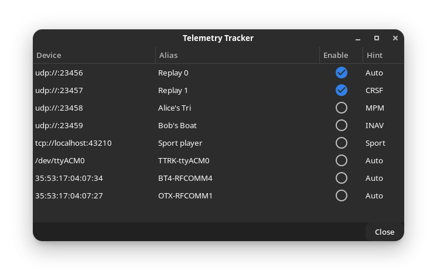

Telemetry Tracking#
Overview#
The mwp "Telemetry Tracking" function allows additional vehicles to be tracked by a single mwp instance.
One use case is:
- The "primary" user is connected using either RX Telemetry or a legacy telemetry radio (3DR, HC-12, LoRA) and uses mwp as a ground station, displaying the vehicle icon, track, information widgets in the "dock" and maybe audio prompts.
- One or more "secondary" users also wish to have their vehicle's tracking symbol displayed on the mwp map. These secondary users connect to mwp from their RX using Bluetooth, USB (or perhaps WiFi). This is somewhat analogous to tracking by INAV-Radar.
- For RX Telemetry, it is necessary to set a RX UART to "Telemetry Mirror"; this is supported by both EdgeTX and OpenTX.
This capability builds on extant mwp features.
- mwp already knows about all USB serial devices and bound Bluetooth serial devices
- These devices are categorised as :
- Primary device. This will be drive the "dock" widgets, be tracked with a flight path and generate audio reports (if enabled). A device becomes the
Primarydevice by user action (as now, from the "Connect" button). - "Radar" devices. Predefined devices for either INAV-Radar or general aviation ADS-B reports
- Secondary devices - Unassigned deviced, available for telemetry tracking. Managed by the "Telemetry Tracking" dialog.
- Primary device. This will be drive the "dock" widgets, be tracked with a flight path and generate audio reports (if enabled). A device becomes the
- Uses extant mwp telemetry protocol decoding:
- LTM
- MAVlink
- CRSF
- SmartPort (direct via inverter or non-inverted via MultiProtocolModule (MPM)
- Flysky 'AA'/INAV type 1 via MPM
- The telemetry protocol is auto-detected.
Telemetry Tracking (Secondary devices)#
The devices will be read for any push telemetry supported by mwp and INAV (e.g. LTM, MAVLink, CRSF, Smartport, MPM). The protocol will be auto-detected. When valid (3D fix, geo-referenced) telemetry data is received, a symbol and name will be displayed on the map (as for the mwp radar display). The name associated with the symbol may be:
- Defined by the user when the device is selected in the user interface ; or
- Automatically assigned by mwp :
- For Bluetooth, the device alias if defined; or
- Derived from the device name (e.g.
TTRK-ttyUSB1)
User Interface#
Legacy Images
The images this section are from legacy mwp, however the capability is the same.
In order to use Telemetry Tracking, it will be necessary for the user to assign the required devices. The primary device (once connected) and any devices predefined for "Radar" will not be considered. Once a device has been assigned as a "Secondary / Telemetry Tracking" device, it may not the used as the "Primary" device. Likewise, an established primary device will not be offered as a secondary device.
The "Telemery Tracking" device(s) may be assigned from the "View" / "Telemetry Tracker" menu option (Control-Shift T).

- The IP entries devices are for testing; they cannot be auto-detected so must be defined by the file
~/.config/mwp/secdevs. This file lists zero or more devices, each with protocol and optional "Alias" text. - The IP devices are defined from the file; each of these has a user-defined alias. The latter two of the UDP aliases have had the alias edited by the user.
- The USB device node is auto-detected and automatically aliased
TTRK-ttyACM0. The user can edit / override this alias if she so wishes. - The two bluetooth devices (
35:53:*) have aliases defined at the operating system level. The user can edit / override this alias if she so wishes. - If
/dev/ttyACM0is subsequently connected as the primary device, it will not appear in this list. - The
Hintcolumn lets the user define the specific protocol to used (vice let it be auto-detected). The default, "Auto", should work in most cases, other than perhaps MPM on OpenTX.
Tracking devices are enabled / disabled using the "Enable" check-button. Once a device is enabled, mwp will attempt to read data from it and display it. The device is closed by toggling the "Enable" button. Once disabled, its resources are freed. If a USB device is physically removed when enabled, its resources will also be freed.
Visualisation#
"Telemetry Tracked" objects are displayed on the map can be inspected using the existing mwp radar display functionality. "Telemetry Tracking" may be used at the same time as the extant "INAV-Radar and "ADS-B" tracking.
And example of visualisation is:

The "Primary" vehicle (a flying wing) has the standard mwp visualisation attributes. The other icons, Replay 0 and Replay 1 are "secondary" tracks from other pilot's CRSF telemetry (but it could be any of LTM, Mavlink, CRSF, SPort or Flysky 'AA' (INAV type 1)). Note also that Replay 0 has not reported for over 5 minutes ("stale"); maybe it's crashed? At least the pilot knows where to start looking.
Icon#
All "Telemetry Tracked" vehicles use a common icon (inav-telem.svg).
The default icon may be overridden by the user if so desired.
Constraints#
Linux preferred, due to the udev dependency for device enumeration. On other platforms it will be necessary to define devices a priori using the ~/.config/mwp/secdevs file. This file is maintained by the "Telemetry Tracker" GUI editor.
An example secdevs file might be:
# name, hint, alias
udp://:23456,Auto,Replay 0
udp://:23457,CRSF,Replay 1
udp://:23458,MPM
udp://:23459,INAV
tcp://localhost:43210,Sport,Sport player